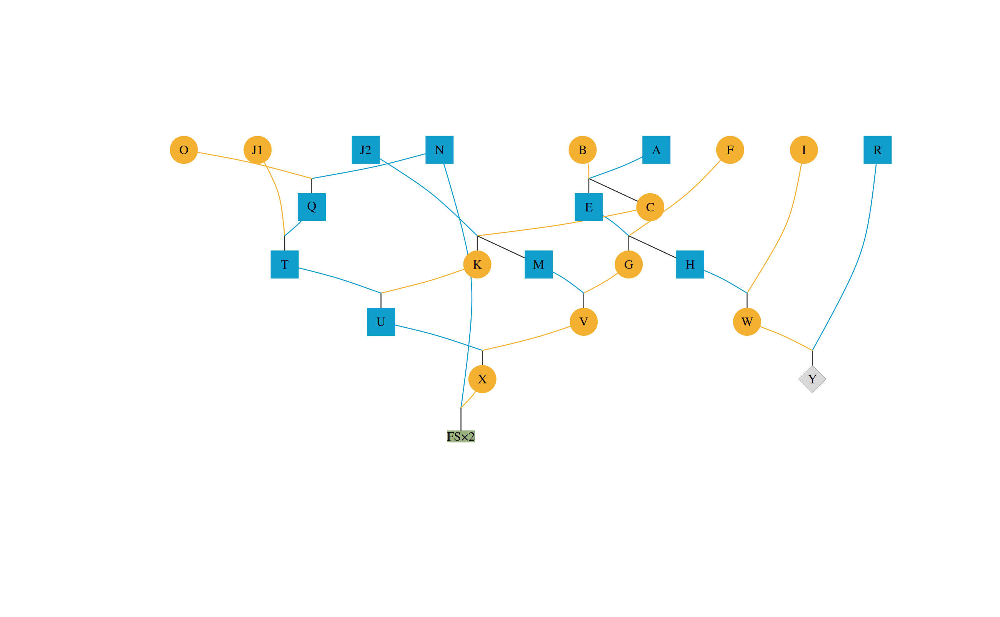
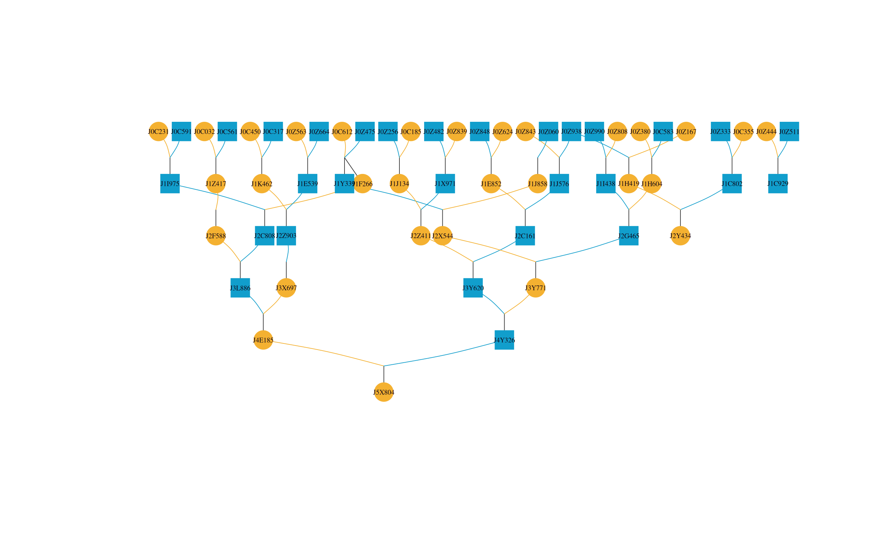
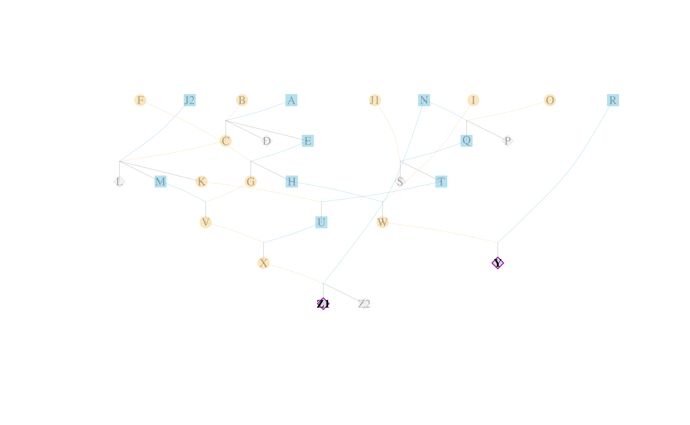
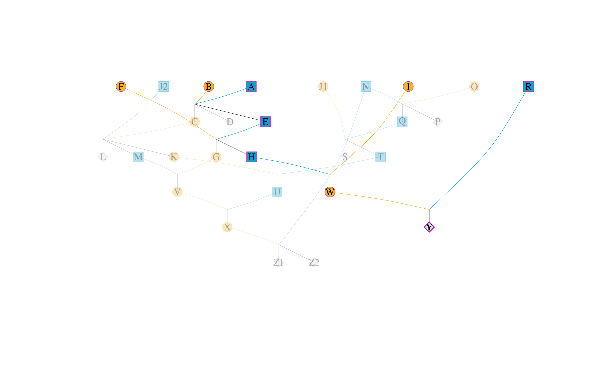
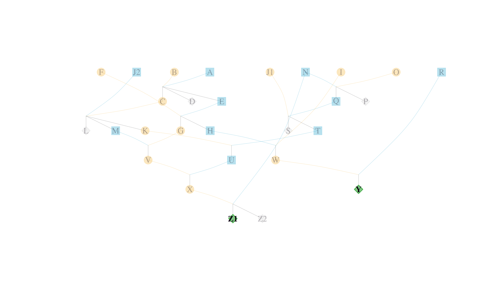
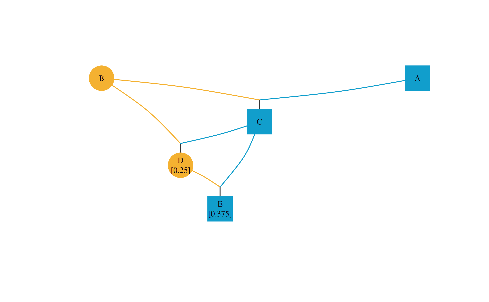
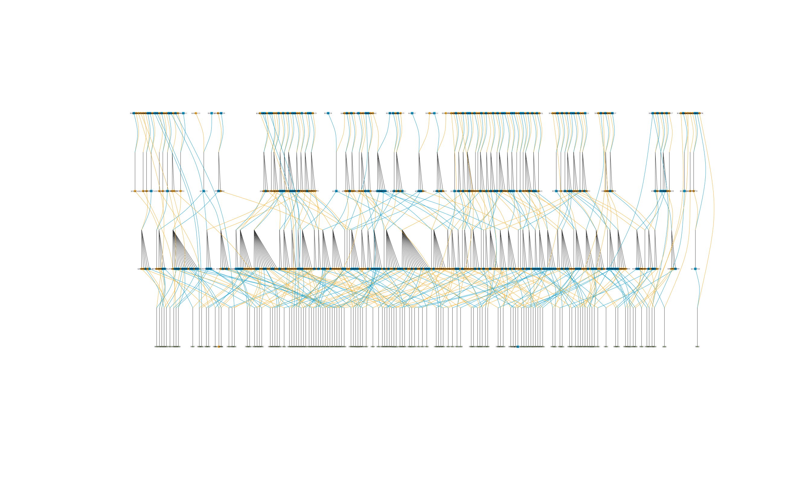
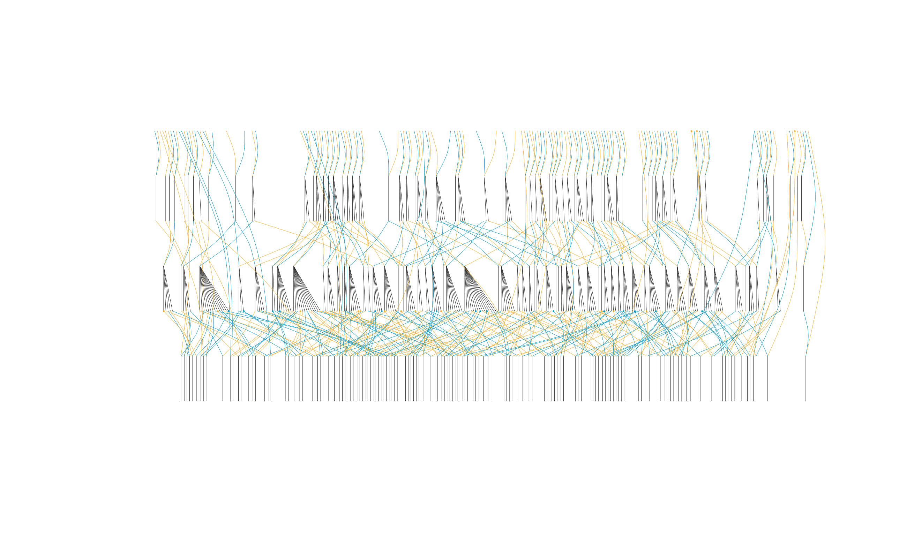
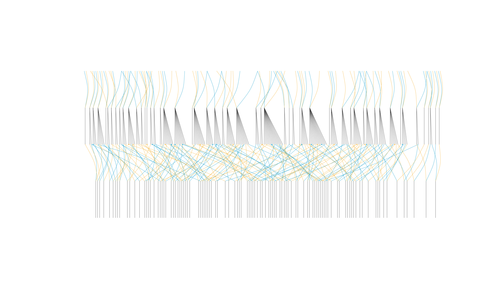

2. How to draw a pedigree
Sheng Luan
2026-03-14
Source:vignettes/draw-pedigree.Rmd
draw-pedigree.Rmd-
Drawing the pedigree graph
1.1 A simple pedigree graph
1.1.1 Highlighting specific individuals
1.1.2 Showing inbreeding coefficients
1.2 A reduced pedigree graph
1.3 An outlined pedigree graph
1.4 How to use this package in a selective breeding program
1.4.1 Analysis of founders for an individual
1.4.2 The contribution of different families in a selective breeding program
1 Drawing the pedigree
The visped function takes a pedigree tidied by the
tidyped function and outputs a hierarchical graph for all
individuals in the pedigree. The graph can be displayed on the default
graphics device and saved as a PDF file. The graph in the PDF file is a
vector drawing, which is legible and avoids overlapping. It is
especially useful when the number of individuals is large or when
individual labels are long. This function can visualize very large
pedigrees (> 10,000 individuals per generation) by compacting
full-sib individuals. It is particularly effective for aquatic animal
pedigrees, which typically include many full-sib families per generation
in the nucleus breeding population. A pedigree outline without
individual labels is shown if the graph width exceeds the maximum PDF
width (200 inches). This helps breeders quickly review the population
construction process and identify any introduction of new genetic
material.
Important Note: It is strongly recommended to set
the cand parameter when tidying a pedigree. Pruning the
pedigree by specifying candidates allows for more accurate generation
inference and a more logical layout in the resulting pedigree tree.
Additionally, isolated individuals (those with no parents and no
progeny) are automatically filtered out by visped() to
prevent cluttering the graph. These individuals are assigned Generation
0 during the tidying process.
A small pedigree is drawn in the following figure. The following code also demonstrates how to save the graph as a high-quality vector graphic in a PDF file.
tidy_small_ped <-
tidyped(ped = small_ped,
cand = c("Y", "Z1", "Z2"))
visped(tidy_small_ped, compact = TRUE, file = tempfile(fileext = ".pdf"))
#> Pedigree saved to: /tmp/RtmpTTzjgV/file20247bcc49c6.pdf
#> Label cex: 0.65. Symbol size: 1. Adjust 'cex' and 'symbolsize' if labels are too large or small.
In the above graph, two shapes and three colors are used. Circles
represent individuals, while squares represent families. Dark sky blue
indicates males, dark goldenrod indicates females, and dark olive green
indicates unknown sex. For example, a dark sky blue circle represents a
male individual, while a dark goldenrod square represents all female
individuals in a full-sib family when compact = TRUE. The
ancestors are drawn at the top and descendants are drawn at the bottom
in the pedigree graph. Parents and offspring are connected via dummy
nodes. Lines from offspring to dummy nodes are dark grey, while lines
from dummy nodes to parents match the parents’ respective colors.
1.1 A simple pedigree graph
The trimmed simple_ped pedigree is drawn and displayed on the default graphics device. The addgen and addnum parameters need to be set to TRUE when tidying the pedigree using the tidyped function.
tidy_simple_ped <- tidyped(simple_ped)
visped(tidy_simple_ped, cex=0.3, symbolsize=10)
#> Label cex: 0.3. Symbol size: 10. Adjust 'cex' and 'symbolsize' if labels are too large or small.
#> Tip: Use 'file' to save as a legible vector PDF.
Figures displayed in the RStudio Plots panel often have limited
resolution. Individual IDs may overlap if the pedigree is large and the
plot area is restricted. This can be resolved by saving the graph as a
vector graphic in a PDF file. The visped function will
suppress output to the default device if
showgraph = FALSE.
suppressMessages(visped(tidy_simple_ped, showgraph = FALSE, file = tempfile(fileext = ".pdf")))By setting the file parameter, you can generate a high-definition PDF version of the pedigree.
1.1.1 Highlighting specific individuals
Specific individuals can be highlighted in the pedigree graph using the highlight parameter. This is useful for marking candidates, founders, or any individuals of interest.
You can provide a character vector of individual IDs to use the default highlight colors (purple border and light purple fill):

#> Label cex: 0.65. Symbol size: 1. Adjust 'cex' and 'symbolsize' if labels are too large or small.
#> Tip: Use 'file' to save as a legible vector PDF.You can also highlight an individual and its relatives (ancestors and
descendants) by setting trace = TRUE:
# Highlight individual "Y" and all its ancestors and descendants
visped(tidyped(small_ped), highlight = "Y", trace = TRUE)
#> Label cex: 0.65. Symbol size: 1. Adjust 'cex' and 'symbolsize' if labels are too large or small.
#> Tip: Use 'file' to save as a legible vector PDF.Alternatively, you can customize the colors by providing a list with ids, frame.color, and color:
visped(tidyped(small_ped),
highlight = list(ids = c("Y", "Z1"),
frame.color = "#4caf50",
color = "#81c784"))
#> Label cex: 0.65. Symbol size: 1. Adjust 'cex' and 'symbolsize' if labels are too large or small.
#> Tip: Use 'file' to save as a legible vector PDF.1.1.2 Showing inbreeding coefficients
Inbreeding coefficients can be displayed on the pedigree graph using the showf parameter in the visped function. This requires that the pedigree has been processed with inbreeding coefficients calculated using the inbreed parameter in the tidyped function.
library(data.table)
test_ped <- data.table(
Ind = c("A", "B", "C", "D", "E"),
Sire = c(NA, NA, "A", "C", "C"),
Dam = c(NA, NA, "B", "B", "D"),
Sex = c("male", "female", "male", "female", "male")
)
tidy_test_ped_inbreed <- tidyped(test_ped, inbreed = TRUE)
visped(tidy_test_ped_inbreed, showf = TRUE)
#> Label cex: 0.65. Symbol size: 1. Adjust 'cex' and 'symbolsize' if labels are too large or small.
#> Tip: Use 'file' to save as a legible vector PDF.
#> Note: Inbreeding coefficients of 0 are not shown in the graph.1.2 A reduced pedigree graph
Warning messages will be shown when you try to draw the pedigree graph of the deep_ped dataset.
cand_J11_labels <- deep_ped[(substr(Ind, 1, 3) == "K11"), Ind]
visped(
tidyped(deep_ped,
cand = cand_J11_labels,
tracegen = 3),
cex=0.08,
symbolsize=5.5
) Too many individuals (>=3362) in one generation!!! Two choices:
1. Removing full-sib individuals using the parameter compact = TRUE; or,
2. Visualizing all nodes without labels using the parameter outline = TRUE.
Rerun visped() function!The function indicates that there are too many individuals in a single generation to draw a standard pedigree graph. It is recommended to use the compact or outline parameters to simplify the pedigree.
First, let’s try the compact parameter and output it to a PDF file. The plot on the default device may suffer from significant overlapping due to the high density of individuals.
cand_J11_labels <- deep_ped[(substr(Ind,1,3) == "K11"),Ind]
visped(
tidyped(
deep_ped,
cand = cand_J11_labels,
trace = "up",
tracegen = 3
),
cex=0.08,
symbolsize=5.5,
compact = TRUE,
showgraph = TRUE,
file = tempfile(fileext = ".pdf")
)
#> Pedigree saved to: /tmp/RtmpTTzjgV/file2024570b39db.pdf
#> Label cex: 0.08. Symbol size: 5.5. Adjust 'cex' and 'symbolsize' if labels are too large or small.
You can open the generated PDF file to view the high-definition
pedigree vectorgraph. Most of shapes are square at bottom, and the
internal numbers are the total number of male or female individuals for
each family. Individual labels may be shorter than the shapes and might
not align perfectly. Individual labels can be resized using the
cex parameter. The cex parameter controls the
font size of individual IDs. Increasing cex makes the
labels larger, while decreasing it makes them smaller. The
cex value typically ranges from 0 to 1, but can be larger;
adjustments of 0.1 are usually sufficient. The visped
function will output warning messages including the cex value which was
used for drawing the pedigreed graph.
visped(
tidyped(
deep_ped,
cand = cand_J11_labels,
trace = "up",
tracegen = 3
),
compact = TRUE,
cex = 0.83,
showgraph = FALSE,
file = tempfile(fileext = ".pdf")
)
#> Pedigree saved to: /tmp/RtmpTTzjgV/file202440b5174.pdf
#> Label cex: 0.83. Symbol size: 1. Adjust 'cex' and 'symbolsize' if labels are too large or small.You can open the generated PDF file to view the high-definition
pedigree vectorgraph. The labels align better with the shapes compared
to the previous version. You can continue to adjust cex
until the labels are sized appropriately.
1.3 An outlined pedigree graph
Setting outline = TRUE produces an outlined pedigree
graph. Individual labels will not be shown in the graph. This is highly
effective for large pedigrees with many individuals.
The following code generates an outlined pedigree graph in a PDF file.
suppressMessages(visped(
tidyped(
deep_ped,
cand = cand_J11_labels,
tracegen = 3),
compact = TRUE,
outline = TRUE,
showgraph = TRUE,
file = tempfile(fileext = ".pdf")
))
1.4 How to use this package in a selective breeding program
1.4.1 An analysis of founders for an individual
Selective breeding is a process of enriching desirable minor genes from multiple founders through successive generations of mating. This is supported by the well-known infinitesimal model (or minor polygene hypothesis).
We select the individual “K110550H” in the deep_ped dataset to visualize its pedigree. The following code generates the pedigree graph for a specific individual in a PDF file.
suppressWarnings(
K110550H_ped <- tidyped(deep_ped, cand = "K110550H")
)
if(interactive()) {
visped(K110550H_ped, compact = TRUE)
}As you can see from the figure above, the number of founder individuals (without parents) of the K110550H individual is 71. This indicates that the individual has accumulated favorable genes from many founders, contributing to genetic gain in the target traits.
1.4.2 The contribution of different families in a selective breeding program
Under optimum contribution theory, families contribute different numbers of individuals to the next generation, with higher-indexing families contributing more. By visualizing pedigree, we can directly see the contribution ratio of different families.
The code below shows the parental composition of 106 families born in
the nucleus breeding population in 2007. Setting
tracegen = 2 limits the graph to two generations (parents
and grandparents).
cand_2007_G8_labels <-
big_family_size_ped[(Year == 2007) & (substr(Ind, 1, 2) == "G8"), Ind]
suppressWarnings(
cand_2007_G8_tidy_ped_ancestor_2 <-
tidyped(
big_family_size_ped,
cand = cand_2007_G8_labels,
trace = "up",
tracegen = 2
)
)
sire_label <-
unique(cand_2007_G8_tidy_ped_ancestor_2[Ind %in% cand_2007_G8_labels,
Sire])
dam_label <-
unique(cand_2007_G8_tidy_ped_ancestor_2[Ind %in% cand_2007_G8_labels,
Dam])
sire_dam_label <- unique(c(sire_label, dam_label))
sire_dam_label <- sire_dam_label[!is.na(sire_dam_label)]
sire_dam_ped <-
cand_2007_G8_tidy_ped_ancestor_2[Ind %in% sire_dam_label]
sire_dam_ped <-
sire_dam_ped[, FamilyID := paste(Sire, Dam, sep = "")]
family_size <- sire_dam_ped[, .N, by = c("FamilyID")]
fullsib_family_label <- unique(sire_dam_ped$FamilyID)
suppressMessages(
visped(
cand_2007_G8_tidy_ped_ancestor_2,
compact = TRUE,
outline = TRUE,
showgraph = TRUE
)
)
In the above figure, 106 families are shown at bottom, the parents are shown in middle, and the grandparents are shown at top. It can be seen that the parents are composed of 80 sires and 106 dams. The parents are from 54 full-sib families in the generation of grandparent. Approximately 25 parents originate from just two full-sib families due to the application of optimum contribution theory, accounting for 13.44% of all parents.